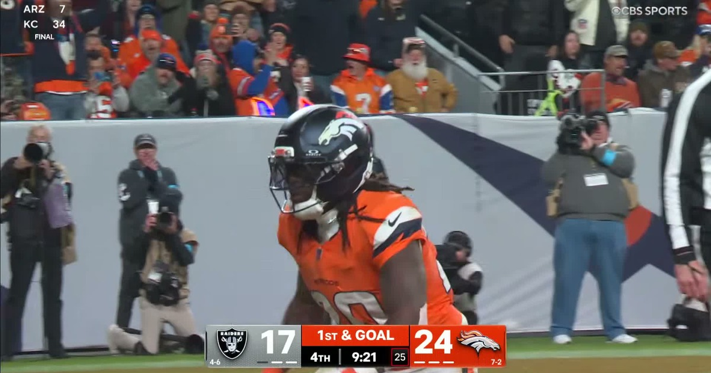

Jonah Coleman just ran for three touchdowns — and the Broncos have their workhorse back
Rookie Jonah Coleman ran for 111 yards and three touchdowns in Denver's 38-24 win over the Raiders — his first 100-yard game, his first three-touchdown game, and the only 100-and-3 game by a rookie in the last five seasons.

Disclosure: this post contains affiliate links. I earn a commission on qualifying purchases.
The rookie took over
Jonah Coleman did not ease into his breakout. He ran through it.
The rookie running back carried the ball 24 times for 111 yards and three touchdowns in the Denver Broncos' 38-24 win over the Las Vegas Raiders on Sunday at Empower Field at Mile High, adding four catches for 18 yards. Every one of his touchdowns came at the goal line, and every one of them answered a moment when Denver needed the lead back or needed it stretched.
It was the first 100-yard game of his career, and the first three-touchdown game of his career. He is the first Bronco to reach 100 rushing yards since October of last year.
Three trips to the end zone
Coleman's first score came in the second quarter, a one-yard plunge two plays after a flea flicker left Denver at the goal line. It put the Broncos up 17-0, and he finished the run with a Mile High Salute.
Las Vegas fought back to tie the game at 17 in the third quarter. Denver answered with a 10-play, 72-yard drive, and Coleman finished it with a four-yard touchdown to retake the lead, 24-17.
His third came in the fourth quarter, a seven-yard run that made it 31-17 — and took him past 100 rushing yards on the day. A Ja'Quan McMillian pick-six later sealed the 38-24 final.
A five-year first
The numbers put Coleman in rare company. According to PFF, he is the only rookie in the past five seasons to record at least 100 rushing yards and three rushing touchdowns in a single game.
The takeover was total. Coleman out-carried J.K. Dobbins 24-1 and saw all of the goal-line work. His role had already been growing, and Sunday was the afternoon it became his backfield.
Coleman entered the game with three touchdowns in five games this season, on 47 carries for 191 yards. He doubled his season touchdown total in one afternoon. He now has six.
What it means
Denver is 8-2 and back in first place in the AFC West, with the best record in the conference picture taking shape around them. The Broncos have won in different ways this season — Bo Nix threw for 225 yards and a touchdown on Sunday, and the defense closed the game with the McMillian interception return — but they had been waiting for a running game to lean on. Coleman gave them one.
The Broncos are on their bye next week, and when they return they host the Miami Dolphins on Sunday, December 6, at 4:05 PM ET — Coleman will run out as the No. 1 back with a hat trick already on his resume.
Gear up: Fanatics